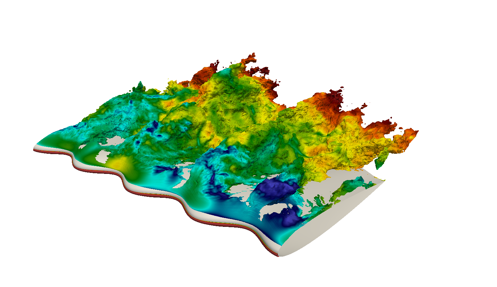

Using a hatch for performance
Our client came to us with a proposition. He wanted to know if we could develop with him an idea he had to fit While some increase in the boundary layer momentum thickness on the fuselage due to the lower energy air emerging from the cockpit is inevitable we can see that this is minimal and that the freestream air successfully entrains the cabin flow increasing its momentum and delivering a smooth flow on the fuselage downstream of the air extractor.
Initial fitting successfully completed all ready for a flight test next month (after the customer's wedding!) and feedback from the pilot.
Using a hatch for performance
play hfjdh
put in the noisy vortex here
